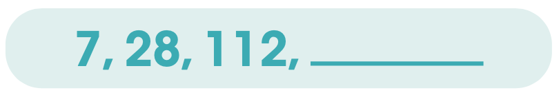

<!--+parrafoinputs(['La mayoría de los liberales eran', ['civiles', 0],])--><!DOCTYPE html>
<html lang="es">
  <head>
    <meta charset="UTF-8"/>
    <meta name="viewport" content="width=device-width, initial-scale=1.0"/>
    <title>Confirmo lo que aprendí</title>
    <link rel="stylesheet" href="https://fonts.googleapis.com/css2?family=Montserrat&amp;display=swap"/>
    <link rel="stylesheet" href="https://cdnjs.cloudflare.com/ajax/libs/animate.css/4.0.0/animate.min.css"/>
    <link rel="stylesheet" href="https://stackpath.bootstrapcdn.com/bootstrap/4.5.0/css/bootstrap.min.css"/>
    <link rel="stylesheet" href="../../assets/font/stylesheet.css"/>
    <link rel="stylesheet" href="../../assets/assets.css"/>
    <style>
      .blank{border-bottom:2px solid var(--main);width:120px;display:inline-block}
      .fr{display:inline-block;text-align:center;vertical-align:middle}
      .choose .options div hr,.fr hr{borde:none;border-top:2px solid var(--sec);min-width:40px;margin:0}
      .choose .options div{background:#f5f5f5;padding:6px;border-bottom:none;border-radius:6px}
      .choose .options div.active{border:2px solid var(--main);background:#fff;box-shadow:4px 4px 0 rgba(0,0,0,.1)}
      
      img{
          display: block;
          margin: 0 auto;
          width: 100%;
          max-width: 220px;
      }
    </style>
    <body></body>
    <div class="container my-5 animate__animated animate__fadeIn animate__delay-1s" id="app">
      <h1>Confirmo lo que aprendí</h1>
      <div class="instruccion mt-5">Marca la respuesta correcta.</div>
      <div class="row mt-3">
        <div class="col-12">
          <template v-for="(i, index) in temps">
            <choose :key="index" v-model="r[index]" :ref="refCount()" :num="(index+1)+'.'" :text="i.p" :options="i.ops" @isright="right++" :answer="i.ops[i.a]"></choose>
          </template>
        </div>
      </div>
      <finalize @evaluate="finalizar" @reset="reset" :resultado="resultado" :right="right" :total="total"></finalize>
    </div>
    <script src="https://cdnjs.cloudflare.com/ajax/libs/lodash.js/4.17.20/lodash.min.js"></script>
    <script src="https://unpkg.com/vue@2.6.11/dist/vue.js"></script>
    <script src="https://cdnjs.cloudflare.com/ajax/libs/howler/2.2.0/howler.min.js"></script>
    <script src="https://cdn.jsdelivr.net/npm/sortablejs@1.8.4/Sortable.min.js"></script>
    <script src="https://cdnjs.cloudflare.com/ajax/libs/Vue.Draggable/2.20.0/vuedraggable.umd.min.js"></script>
    <script src="https://cdnjs.cloudflare.com/ajax/libs/jsPlumb/2.15.5/js/jsplumb.js"></script>
    <script src="../../assets/modulos/dragdropMod.js"></script>
    <script src="../../assets/modulos/dropdowns.js"></script>
    <script src="../../assets/modulos/selectable.js"></script>
    <script src="../../assets/modulos/selectableoptions.js"></script>
    <script src="../../assets/modulos/check.js"></script>
    <script src="../../assets/modulos/inputbox.js"></script>
    <script src="../../assets/modulos/choose.js"></script>
    <script src="../../assets/modulos/tip.js"></script>
    <script src="../../assets/modulos/relational.js"></script>
    <script src="../../assets/modulos/finalize.js"></script>
    <script src="../../assets/modulos/utils.js"></script>
    <script src="../../assets/assets.js"></script>
    <script>
      app.$set(app, 'temps', [
          {
              p: 'Tomás y sus dos hermanos se repartieron 2 manzanas en partes iguales. ¿Cuánto le tocó a cada uno?',
              ops: ['<div class=fr>2<hr>3</div>', '<div class=fr>1<hr>2</div>','<div class=fr>1<hr>5</div>'],
              a:0
          },
          {
              p: '¿Qué número pertenece a la siguiente sucesión aritmética? ',
              ops: ['15','49','41'],
              a:2
          },
          {
              p: '¿Qué número continúa en la siguiente progresión aritmética? ',
              ops: ['336','448','384'],
              a:1
          },
          {
              p: 'Rocío utiliza 0.26 m de listón para un arreglo floral. Si compró 4 m para 15 arreglos, ¿cuánto listón le sobró?',
              ops: ['0.1 m', '1 m','1.1 m'],
              a:0
          },
          {
              p: 'Si Amparo compró 7 cartulinas a $3.50 cada una, ¿cuánto pagó en total por ellas?',
              ops: ['$2.45','$245.50','$24.50'],
              a:2
          },
          {
              p: 'Si el diámetro de un círculo mide 38 cm, ¿cuánto mide su radio?',
              ops: ['19 cm','38 cm','76 cm'],
              a:0
          },
          {
              p: 'De un refresco de 600 ml sólo bebí 150 ml. ¿A qué porcentaje equivale lo que me tomé?',
              ops: ['20 %','25 %','30 %'],
              a:1
          },
          {
              p: '¿A qué cantidad equivale el 35 % de $69?',
              ops: ['$2 415.00','$24.15','$241.50'],
              a:1
          },
          {
              p: '¿Cuál es la fracción que representa 75 %?',
              ops: ['<div class=fr>1<hr>2</div>', '<div class=fr>3<hr>4</div>', '<div class=fr>2<hr>3</div>'],
              a:1
          },
          {
              p: 'Éstas son las calificaciones de Español del grupo de 5o A: 4 alumnos sacaron 10, 8 sacaron 9, 5 sacaron 8 y 2 sacaron 7. ¿Cuál es el promedio de calificación del grupo?',
              ops: ['8.73','8.68','8.35'],
              a:0
          },
          
          
          /*
          {
              p: '',
              ops: [''],
              a:0
          },
          */
          
      ])
    </script>
  </head>
</html>